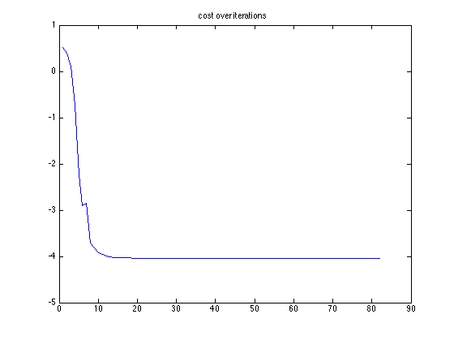
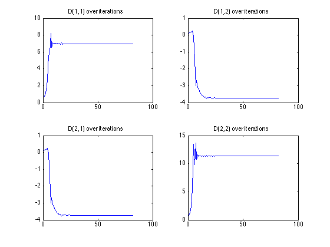

Contents
Read Data
clc; clear;close all
S = [0.5045 - 1i*0.0217, 0.6874 + 1i*0.0171, 0.3632 + 1i*0.1789, 0.3483 + 1i*0.1385, 0.2606 - 1i*0.0675, 0.2407 + 1i*0.1517];
S = abs(S);
G = [[1;0],[0.866;0.5],[0.5;0.866],[0;1],[-0.5;0.866],[-0.866;0.5]];
rng(0);
Part a
Gradient descent on L
% Initialize variables x = rand(1,3); cost_history = []; D_history = []; diff = 2; a = 1; while diff > 1e-15 % Compute gradient [f,grad] = costFunction(x,S,G); % Project to constraint set x_new = x - a*grad; if x_new(1) < 0 x_new(1) = 0; end if x_new(2) < 0 x_new(2) = 0; end % Save history for plotting cost_history = [cost_history f]; L = [x(1) 0; x(3) x(2)]; D = L*L'; D_history = [D_history D(:)]; % Adjust step size dynamically f_new = costFunction(x_new,S,G); if f_new > f a = a/2; else a = a*1.1; end % Convergence criterion diff = abs(x - x_new)/abs(x); x = x_new; end % Plot required stuff figure plot(log(cost_history)) title('cost over iterations') figure subplot(2,2,1), plot(D_history(1,:)) title('D(1,1) over iterations') subplot(2,2,2), plot(D_history(2,:)) title('D(1,2) over iterations') subplot(2,2,3), plot(D_history(3,:)) title('D(2,1) over iterations') subplot(2,2,4),plot(D_history(4,:)) title('D(2,2) over iterations') [f,grad] = costFunction(x,S,G); if norm(grad) > 1e-3 %from trail and error error('rerun. stuck at local minima') end L = [x(1) 0; x(3) x(2)]; D = L*L'
D =
6.9534 -3.7364
-3.7364 11.3532
  Part b
Principal Direction Vector
[U,S,V] = svd(D); disp(U(:,1))
-0.4963
0.8681
Part c
ratio of diffusion in the principal direction and diffusion in the direction orthogonal to it
disp(S(1,1)/S(2,2))
2.8001